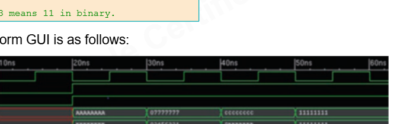
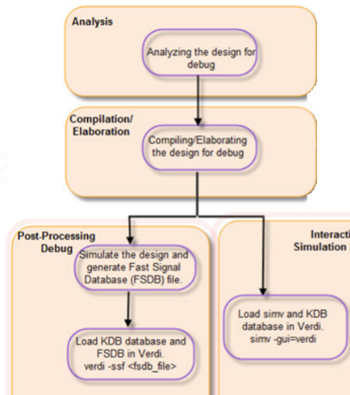

Ideia central
Um design de referência não ensina só o circuito. Ele ensina o fluxo de trabalho: onde está o DUT, onde está o testbench, como os arquivos entram no simulador, como verificar resultado e como depurar quando algo falha.
identificar DUT -> identificar testbench -> analisar -> elaborar -> simular -> checar -> depurarFluxo VHDL em três passos
Para VHDL no ambiente Synopsys, pense no fluxo principal como três etapas:
vhdlan -work work -kdb -f source_list -l analyze.log
vcs -kdb top_tb -debug_access -l elaborate.log
./simv -l sim.log
vhdlan analisa os arquivos VHDL. vcs elabora a hierarquia e gera o executável.
simv roda a simulação. Se o makefile esconder esses comandos, você ainda deve saber
que essas fases existem.

Dois passos ou três passos?
O curso mostra exemplo simples que pode ser rodado de forma compacta, mas o modelo mental robusto para VHDL é o de três passos. Em projetos mistos, com muitos arquivos ou com debug, separar análise, elaboração e simulação evita confusão.
O exemplo do somador
O somador aparece de novo porque é simples e expõe uma regra universal: aritmética precisa preservar largura. Se dois operandos de 2 bits podem valer 3, a soma máxima é 6, que precisa de 3 bits.
x = 3 = 2'b11
y = 3 = 2'b11
x + y = 6 = 3'b110No lab real, o somador de 32 bits aplica a mesma ideia criando um resultado interno de 33 bits:
signal ca_sum : std_logic_vector(32 downto 0);
ca_sum <= ('0' & op_a) + ('0' & op_b) + (i_cin_ext & carry_cin);
adder_out <= ca_sum(31 downto 0);
carry_out <= ca_sum(32);Essa é uma ótima prática: separar resultado visível de resultado interno completo.
O testbench do adder
O testbench real do lab instancia o DUT e aplica casos com wait for 10 ns.
Isso é suficiente para treinar fluxo, mas ainda é um testbench simples, porque não parece
emitir automaticamente PASSED/FAILED.
op_a <= X"00000000"; op_b <= X"00000001"; carry_cin <= '0'; wait for 10 ns;
op_a <= X"00000001"; op_b <= X"00000011"; carry_cin <= '1'; wait for 10 ns;
op_a <= X"00000010"; op_b <= X"00000101"; carry_cin <= '0'; wait for 10 ns;Como deixar esse testbench mais forte?
O próximo passo seria calcular o resultado esperado e usar asserts. Assim, o testbench deixa de apenas aplicar valores e passa a verificar.
assert adder_out = expected(31 downto 0)
report "adder_out mismatch"
severity error;
assert carry_out = expected(32)
report "carry_out mismatch"
severity error;Terminal e waveform
O console ajuda a ler valores discretos e mensagens do testbench. A waveform ajuda a entender tempo, ordem dos eventos e origem da divergência.

O ideal é o log dizer que falhou e a waveform explicar por que falhou.
Debug com Verdi
Verdi entra depois ou junto da simulação para investigar sinais, hierarquia e código.
verdi -nologo -ssf adder2bit_tb.fsdb &
Debug bom é metódico: encontre o primeiro erro, volte no tempo, compare entradas e saídas, decida se o problema está no DUT ou no testbench, corrija e rode de novo.
Os 10 designs de referência
A tabela dos slides foi convertida em uma explicação. A ideia é enxergar uma escada de conceitos.
| Design | O que treina | O que observar |
|---|---|---|
| 32-bit adder | carry e largura aritmética | resultado interno maior que saída |
| 16x16 multiplier | produto com largura maior | resultado de 32 bits |
| counter with overflow | clock, load e flag | momento exato do overflow |
| up/down counter | controle de direção | troca entre subir e descer |
| 2-client arbiter | prioridade e FSM | requests simultâneos ou alternados |
| mux/demux | seleção combinacional | todas as seleções possíveis |
| encoder/decoder | codificação e one-hot | entradas inválidas ou prioridade |
| matrix multiplication | aritmética composta | largura e ordem dos produtos |
Por que o arbiter é especialmente útil?
O arbiter treina FSM: estado atual, próximo estado, requests e grants. É mais próximo de controle real do que mux ou adder. Ao estudá-lo, procure processo sequencial de estado, processo combinacional de próximo estado e processo de saída.
Boas práticas de simulação
Os slides textuais foram convertidos em práticas concretas:
- Tenha plano de verificação, mesmo simples.
- Separe DUT, testbench, logs, scripts e waves.
- Use filelists em vez de comandos longos digitados à mão.
- Automatize análise, elaboração, simulação e limpeza.
- Compile incrementalmente quando o projeto crescer.
- Use Verdi para investigar, não como único critério de aprovação.
Ligação com o lab real
A pasta VHDLRefDesign contém pares como:
adder_32.vhd
adder_32_tb.vhd
arbiter.vhd
arbiter_tb.vhd
counter.vhd
counter_tb.vhdO README mostra o fluxo:
vhdlan adder.vhd adder_tb.vhd -kdb
vcs adder_tb -kdb -debug_access
./simv -ucli -i run.simEsse é exatamente o tipo de sequência que um makefile pode encapsular.
Quizzes, sem decorar cegamente
- VHDL flow: pense em três passos:
vhdlan,vcs,simv. - Testbench: DUT + stimulus generator + response checker.
vhdlan: analisa VHDL e encontra erros de sintaxe/semântica antes da elaboração.- Model libraries: podem não ser necessárias em RTL simples, mas são importantes em gate-level/IP/tecnologia.
Base Markdown: aula didática, cobertura slide a slide.